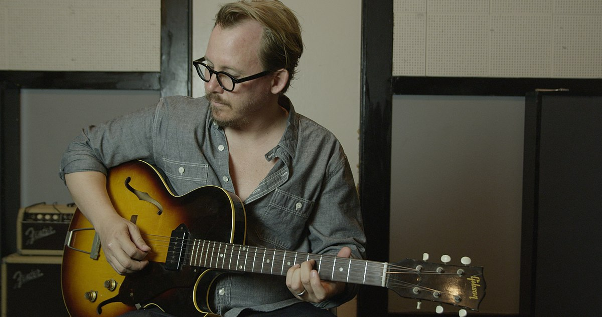

Trilha Sonora de Red Dead Redemption 2
A trilha sonora de Red Dead Redemption 2 é uma das mais marcantes, composta por Woody Jackson, transmitindo a emoção do Velho Oeste. Você pode ouvir a trilha sonora completa aqui no YouTube.
Outro link para a playlist completa com as músicas mais marcantes do game pode ser encontrado neste link. Créditos aos criadores dos vídeos: PeopleCanFly23 e FullAlbum. Obrigado!
A música de Red Dead Redemption 2 foi cuidadosamente composta para criar uma experiência sonora que complementa a vastidão e a intensidade do Velho Oeste. As melodias, muitas vezes suaves e melancólicas, ajudam a construir a atmosfera única do jogo, enquanto as composições mais épicas acompanham momentos de ação e tensão.
Principais Faixas
- Outlaws from the West - Uma música que marca o espírito de aventura.
- The Fine Art of Conversation - Uma das faixas mais emocionais do jogo.
- American Venom - Uma música que acompanha um dos momentos mais intensos do jogo.
- The Course of True Love - Uma melodia suave e nostálgica que define o tom para alguns dos momentos mais calmos.
Ouça a Trilha Sonora Completa
Curiosidades sobre a Trilha Sonora
- A trilha sonora de Red Dead Redemption 2 foi composta por Woody Jackson, que trabalhou com uma equipe de músicos para criar uma experiência sonora imersiva.
- Em algumas faixas, instrumentos tradicionais do Velho Oeste, como violões e banjos, são usados para evocar o clima da época.
- Woody Jackson trabalhou com a Rockstar Games por vários anos, criando trilhas sonoras icônicas para outros jogos também, como Grand Theft Auto V.

O que Dizem sobre a Trilha Sonora
"A trilha sonora de Red Dead Redemption 2 não é apenas música; é uma extensão da história do jogo. Ela faz você se sentir no Velho Oeste." - IGN
Disponível no Spotify, Apple Music e outros serviços de streaming.